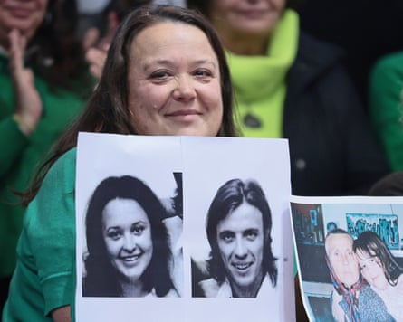
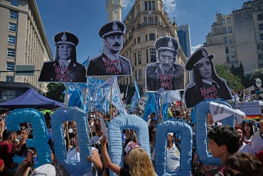

A man taken from his mother as a newborn by Argentina’s military has been reunited with his relatives after almost 50 years.
The man, 49, whose identity was not disclosed for privacy reasons, was identified after he took a DNA test.
He is the 140th child found by the group Grandmothers of the Plaza de Mayo, who campaign for their relatives who were murdered and disappeared during political repression and state-sponsored violence in Argentina between 1976 and 1983.
The man is the son of Graciela Alicia Romero and Raul Eugenio Metz, both kidnapped by the military on 16 December 1976 in Cutral Có, a city in Province of Neuquén, and disappeared. Romero was five months pregnant when a taskforce of army personnel raided the home where the couple lived with their one-year-old daughter. Romero was killed after she gave birth.
After the 1976 coup, Argentina’s military set about crushing potential opposition and eventually 30,000 people were killed or disappeared, almost all of them civilians. Pregnant prisoners were kept alive until they gave birth and then murdered . At least 500 newborns were taken from their parents while in captivity and given to military couples to raise as their own.
Adriana Metz, sister of the 140th identified grandchild, at a press conference with photos of her murdered parents.Photograph: EPA
The man, who has not been named, was reunited with his sister, Adriana Metz, who was just a year-and-a-half old when their parents were abducted. Metz, now a member of the Abuelas de Plaza de Mayo’s executive committee, was raised by her grandparents and never stopped hoping that her brother might still be alive. Their grandmother died in 1992 without having met her grandson.
During a press conference in Buenos Aires, Metz said that during her first conversation with her brother, she learned that he had been raised as an only child. She celebrated their reunion as the beginning of a new chapter for their family.
“From here on out, everything is a gain for the Metz-Romero family,” she said.
“Thank you to the Grandmothers for teaching us that this search is a collective one, and that we must continue on behalf of the 300 grandchildren who are still missing,” Metz said.
“With the restitution of grandchild 140, we confirm once again that our grandchildren are among us – and that thanks to the perseverance and tireless work of 47 years of struggle, more will continue to appear. This fight cannot be carried out in solitude,” said Estela de Carlotto, 94, president of the Grandmothers of Plaza de Mayo.
Thousands attend a Day of Remembrance for Truth and Justice rally in Buenos Aires’ Plaza de Mayo in March 2024 to commemorate the victims of the last military dictatorship.Photograph: Anadolu/Getty Images
According to the group, there are still hundreds of people aged between 45 and 49 years old who could be anywhere in the world and who have no idea they were kidnapped as children.
By 1983, hundreds of these “adoptions” were coming to light. But it was not until 2021 that large-scale efforts were made to trace the children, when the Argentinian government sent hundreds of DNA testing kits to its consulates around the world in an effort to put names to unidentified victims and to find the children of the disappeared, many of whom are unaware of their true identity.
However, that changed in 2023, when the far-right president Javier Milei took office in Argentina, with human rights groups raising the alarm over his attempts to rewrite history and overturn the longstanding consensus over the dictatorship’s crimes .
In May, a delegation from the Grandmothers of Plaza de Mayo met EU officials in Brussels to seek support for expanded DNA testing to identify missing children and denounce efforts by Milei to dismantle the search for missing people .
Since he took power, Milei has ordered the closure of the special investigation unit of the National Commission for the Right to Identity; defunded the national genetic data bank; dissolved the survey and analysis team of the armed forces archives; and restricted access to official documentation at the ministries of defence and security.